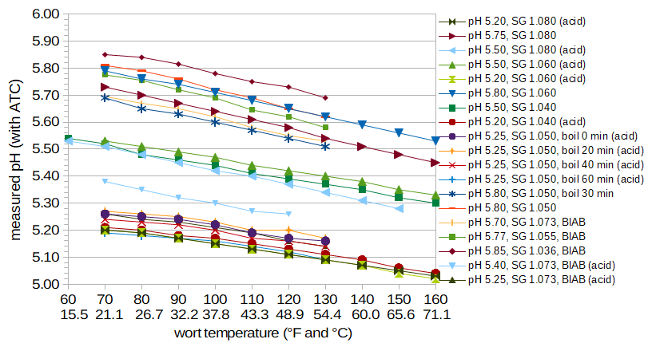
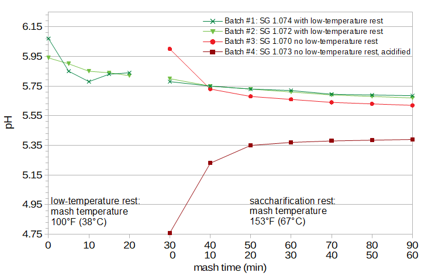
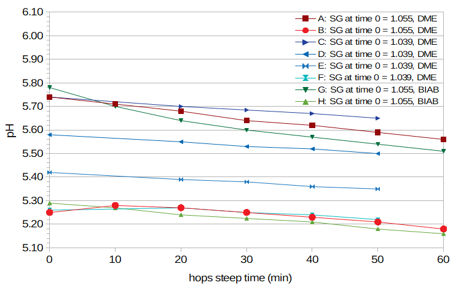
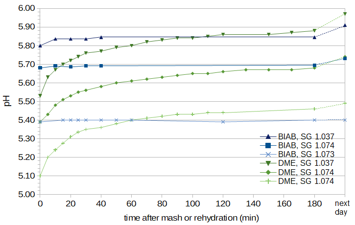

Figure 4. pH as a function of specific gravity.
Figure 4. pH as a function of specific gravity.
Abstract
The topic of mash and wort pH is covered in excellent detail by Martin Brungard, A. J. deLange, John Palmer and Colin Kaminski, Kai Troester, and many others. In order to get a better hands-on feeling for the factors that influence pH, I made measurements of pH as a function of specific gravity, time, and temperature, using Pilsner malt (from both milled grain and dried malt extract), low-alkalinity water, and phosphoric acid. I also found a large change in post-boil pH with hopping rate. While this blog post covers no new theoretical ground, it may be of interest to homebrewers who have an interest in pH and who like to see plots of raw data.
1. Introduction: Mash and Wort pH
The pH of a mash made from low-alkalinity water and pale malt is about 5.8 [deLange; Palmer and Kaminski, p. 58]. Pilsner malt has a reported Congress Mash pH of 5.96 [Palmer and Kaminski, p. 80], but the pH can vary between 5.6 and 6.0 depending on a variety of factors such as "barley variety, growing conditions, modification, and microflora" [Palmer and Kaminski, p. 76]. Troester says that "very lightly kilned malts have a natural pH between 5.7 and 5.8" [Troester (Part 3)].
The typical homebrewer should aim for a mash pH in the ballpark of 5.2 to 5.5 [Brungard, section 2.1; Palmer and Kaminski, p. 60; Noonan, p 144; Fix, p 49; Troester (Part 2), citing Kunze (2007) and Narziss (2005)], although a pH as high as 5.8 is still acceptable [Troester (Part 2)].
The pH of wort obtained from a no-sparge mash is (pretty much by definition) the same as the mash pH at the end of the mashing period, but the pH of wort obtained from batch sparging (or possibly fly sparging) may be higher, as discussed in Section 6 and the Summary.
It's not just the pH of the mash that's important; the pH throughout the rest of the brewing process affects "hop extraction and protein precipitation in the kettle, and yeast performance and clarification in the ferment" [Noonan, p. 53]. The pH also affects the flavor of the finished beer and foam stability [Fix and Fix, p. 170]. In particular, "Increased wort and beer pH makes the beer’s bittering perception more ‘coarse’ and less pleasing" [Brungard, Sec. 2.1]. Generally, getting the pH of the mash and pre-boil wort in the right range yields pH values that are suitable for the later stages; boiling and fermentation lower the pH to the range of 4.0 to 4.6, which is associated with beer that is neither too sharp nor too cloying [Fix and Fix, p. 170]. Much more detail on this topic can be found in Troester's second article on pH [Troester (Part 2)].
2. Experimental Techniques
In the experiments conducted for this post, I created wort using either Briess Pilsen dry malt extract (DME) or the brew-in-a-bag technique with a fine mesh bag, two-row malt, and no sparging. (Briess Malt & Ingredients Co. had no involvement with these experiments; I specify this brand of DME in particular because other sources of DME may have different pH characteristics.) This raises the question of how similar the wort obtained from Briess DME is to wort obtained from a mash with two-row malt. This topic is discussed in Section 8.
For water, I used the tap water available to me in Portland, Oregon. In 2018 (the year these experiments were conducted), the expected range of Total Alkalinity as CaCO3 was 32 to 41 mg/L, which is considered very low alkalinity. To lower pH, I used 10% phosphoric acid. To keep things simple, I did not adjust the water profile with salts such as calcium chloride or calcium sulfate.
To measure pH, I used a Milwaukee MW102 pH meter. (I've found that it can take several minutes for the pH reading to stabilize when measuring wort pH.) To measure temperature, I used a Thermapen Mk4. Specific gravity readings were taken with an H-B Durac hydrometer (standardized to 60°F (15.6°C)) and/or a Brewcraft hydrometer (standardized to 68°F (20°C)). Specific gravity readings were adjusted to the standardized temperature as needed using a formula from Hall [Hall, 1995].
The definition of "room temperature" seems to vary depending on the source. I settled on 70°F (21.1°C) as my definition of room temperature, in large part because that was the temperature of the room when I began these experiments. Usually my room was not more than a few degrees above or below this temperature, and so wort temperatures were easy to adjust to this temperature with a small ice bath or hot water bath.
3. pH and Wort Temperature
Measuring and reporting the pH of wort is not as easy as just reading and writing down a number, even if you have a digital pH meter with automatic temperature correction (ATC). Palmer and Kaminski note that temperature affects pH in two ways: (a) the response of the pH probe changes as a function of temperature, and (b) the chemical activity of a solution (i.e. wort) also changes with temperature. A pH meter with ATC will adjust for the first case, but not the second. They say that "the pH of the wort at mash temperature (~65°C, 150°F) is known to be about 0.3 lower than the same wort when it is cooled to room temperature (~20°C, 68°F). That is why brewers always refer to pH measurements at room temperature" [Palmer and Kaminski, p. 86]. Brungard notes that "[ATC] pH meters only compensate for the response of the pH meter's electrode at varying temperature. That feature does not compensate for the actual pH shift produced chemically in the mash ... All mash pH measurement should be performed at room-temperature" [Brungard, Sec. 2.1].
Palmer and Kaminski give an equation for determining pH at temperature T1 (in Celsius) given the pH at temperature T2 (also in Celsius) [Palmer and Kaminski, p. 86]:
pHT1 = pHT2 + 0.0055 × (T2 − T1)
For example, if the measured pH at 149°F (65°C) is 5.30, then the room-temperature pH is about 5.56, and this value is what is reported as the mash or wort pH. This formula gives a pH difference of 0.26 between 18°C and 65°C. The reported (room-temperature) value of 5.56 doesn't change the fact that the actual pH at the higher temperature is still 5.30.There are other reported differences in pH as a function of temperature. Palmer and Kaminski also quote De Clerck as saying that "the decrease in pH is roughly linear with temperature and the difference is 0.34 between 18 and 65°C with distilled water" [Palmer and Kaminski, p. 58]. Brungard reports measurements "about 0.2 to 0.3 units lower at 150°F than at room temperature" [Brungard, Sec. 2.1]. According to Bamforth, "The pH of wort, for instance, will be of the order of 0.34 lower at 65°C than at 18°C because of increased dissociation of acidic materials" (citing R.H. Hopkins & B. Krause (1947)) [Bamforth, p. 4]. MacWilliam, quoting (the same article from) Hopkins and Krause (1947), provides a table of five pH values and temperatures [MacWilliam, p. 67] using distilled water; the measured pH at 18°C is 5.84, and the pH at 65°C is 5.50. From these five values, the following equation can be obtained:
pHT1 = pHT2 + 0.00714 × (T2 − T1)
These measurements and formula show a pH difference of 0.34 between 18°C and 65°C. Troester cites Briggs as saying that the pH at mash temperature is about 0.35 lower than that at room temperature, but he says that he and others have measured a decrease of only about 0.2 units [Troester (Part 2)].These various sources indicate a difference between room-temperature and mash-temperature pH ranging from 0.2 to 0.35. In order to better understand and quantify this relationship, I measured the pH of wort at different specific gravities and different room-temperature pH levels using wort from both DME and BIAB. (Details on the preparation of the BIAB wort are given in Section 4).
Figure 1 plots pH as a function of temperature for a number of conditions. The listed pH of each condition is the approximate pH of the wort at room temperature. Each condition notes the specific gravity of the wort and whether the wort was created using DME or BIAB. In some cases, the wort was boiled for a specified time, cooled to room temperature, and then the pH was measured as a function of subsequent temperature changes. In some cases, the pH of the wort was lowered using phosphoric acid, as noted in the legend with the term "(acid)".
This plot indicates two things of interest: (1) the change of pH with temperature is not affected by specific gravity, the use of DME or BIAB, boiling of the wort, or the lowering of wort pH using phosphoric acid, and (2) the change in pH with temperature is approximately linear in all cases, but the slope of this line changes as a function of room-temperature pH. In particular, wort with a high room-temperature pH shows a slightly faster decrease in pH as the temperature increases, compared with wort with a low room-temperature pH.
 Figure 1. Wort pH as a function of temperature (in degrees Fahrenheit and Celsius).
We can fit the data in Figure 1 to an equation that predicts the pH at room temperature (RT = 70.0°F or 21.1°C) from temperature T1 and the measured pH at T1 (pHT1):
pHRT = (pHT1 + (b × (TRT − T1))) / ((m × (T1 − TRT) + 1.0)
where, in Celsius, TRT = 21.1, b = 0.0166, and m = -0.00382; in Fahrenheit, TRT = 70.0, b = 0.0092, and m = -0.00212. Alternatively, we can develop an equation that predicts the pH at temperature T2 from the room-temperature pH, using the same values of b and m:pHT2 = (pHRT × ((m × (T2 − TRT)) + 1.0)) - (b × (TRT − T2))
If we use these equations to determine the pH at 65°C given a pH of 5.80 at 18°C, we get 5.54, or a difference of 0.26. This is identical to the value predicted by Palmer and Kaminski's equation at this temperature difference. If we lower the pH of the mash to 5.50 at 18°C, we get a value of 5.29 at 65°C; this difference of 0.21 is in line with values reported by Troester. It is unclear why results from Hopkins and Krause (1947) (and possibly De Clerck) show a much larger pH change with temperature. Without specific details about the malt used in their work, it may not be possible to resolve this discrepancy.One final point of possible interest is that the pH changes that occur with temperature in these lower temperature ranges are "elastic". For example, we can start with a pH of 5.50 at 68°F (20°C) and increase the temperature to 104°F (40°C), lowering the pH to 5.41. When the wort returns to the original temperature, the pH will increase back to 5.50 because (presumably) the "dissociation of acidic materials" mentioned by Bamforth is fully reversible.
4. pH During the Mash
I began these experiments under the impression that the mash pH is more or less stable after about 15 minutes of mashing. Because I knew of no quantitative data to support this belief, I measured the pH during the mash in four conditions using the BIAB technique. Two of the mashes were designed to yield the same results, so that any difference in measurements at the same time points can be attributed to random error or to taking a pH reading before the measurement had stabilized.
In all four conditions, I added 14.82 oz (420.14 g) of Great Western Malting two-row malt to 46.39 fluid ounces (1.372 liters) of water. At a maximum of 36 ppg, assuming 80% potential extract, the malt contributing 9.5 fl.oz/lb (0.619 ml/g) to the total volume, and the grains absorbing 25 fl.oz/lb (1.630 ml/g), this should yield 32 fluid oz (0.946 liters) of wort with specific gravity 1.074. For the fourth condition, I added about 3.4 ml of phosphoric acid to the water.
The first two conditions used a low-temperature rest at 100°F (38°C) for 30 minutes followed by a saccharification rest at 153°F (67°C) for 60 minutes. The third and fourth conditions used a single-temperature infusion at 153°F (67°C) for 60 minutes. The third condition had no adjustment of the mash pH, and the fourth condition adjusted the pH of the water (using phosphoric acid) to yield a mash pH of 5.40.
The low-temperature rest used in the first two conditions is often called an "acid rest" because of a reported reduction in pH caused by activation of the enzyme phytase [Noonan, p. 130]. However, this reduction in pH is more pronounced with under-modified malt [Noonan, p. 132; Green]. Some report no significant decrease in pH [Troester (Part 3); Fix and Fix, p. 24], perhaps due to the use of well-modified malt, water with higher alkalinity [Noonan, p. 130], or not enough time spent at this temperature [Green]. This low-temperature rest is also reported to improve yield [Fix and Fix, p. 24, p. 33; Fix, p. 46], provide a greater concentration of yeast nutrients [Noonan, p. 131], and reduce lautering problems and haze [Green].
The pH was measured directly every 5 minutes during the low-temperature rest and corrected to 70°F (21.1°C) using the equation for pHRT presented in Section 3. During the saccharification rest, 2-oz (60-ml) samples were taken at 10-minute intervals, cooled to room temperature for pH measurement, and then added back to the mash (with subsequent temperature re-adjustment).
The first mash yielded 32 fl.oz (0.95 liters) of wort with specific gravity 1.074. The second mash yielded 34 fl.oz (1.00 liters) of wort with specific gravity 1.072. The third mash yielded 34 fl. oz (1.00 liters) of wort with specific gravity 1.070. The fourth mash yielded 33 fl.oz (0.976 liters) of wort with specific gravity 1.073. (A fifth mash made with identical conditions but not sampled during the mash (not shown here) yielded 34 fl.oz (1.00 liters) of wort with specific gravity 1.069.) Figure 2 shows the change in room-temperature pH during mashing. It can be seen that with the low-temperature rest, the pH decreases quickly in the first 20 minutes by approximately 0.1 units and that during the one-hour saccharification rest, the rate of change of pH is smaller but there is still another decrease of about 0.1 units during this time. With the single-temperature rest, the pH changes very quickly during the first 10 to 20 minutes, and between 20 and 60 minutes it changes by another 0.05 units.
 Figure 2. pH during the mash. This figure shows two cases of a low-temperature rest before the saccharification rest, and two cases of a single-temperature rest. The two cases of single-temperature rest show one case with no pH adjustment and one case with pH adjusted to 5.4.
In short, it seems that the pH has mostly stabilized after the first 20 minutes of the mash. After that time, the pH continues to change, but only by a fairly small amount. The pH of the worts made using highly-modified malt and an "acid rest" of only 15 minutes had slightly higher pH than the single-temperature rest. The yield of the worts made with a low-temperature rest (average gravity 1.073) were marginally greater than those made with a single-temperature rest (average gravity 1.071).
5. pH During the Boil
It is often reported that the pH decreases during the boil. MacWilliam provides a table of pH values (Table XII in his work) showing a decrease of 0.27 units over a 1.75-hour boil, and about 0.20 units over a 1-hour boil [MacWilliam, p. 68]. According to this table, the pH also decreases from the end of the boil to pitching by about 0.1 units [MacWilliam, p. 68]; this decrease presumably occurs while the wort is still at a very high temperature after flameout. Additionally, MacWilliam provides a table of the pH of unhopped wort and the resulting (hopped) post-boil pitching wort for different specific gravities, showing that while the pH of the unhopped wort is inversely correlated with gravity, the pH of the pitching wort rises with gravity; the change in pH during the boil is therefore greater at lower specific gravities [MacWilliam, p. 69].
deLange refers to data from Hough et. al, noting that the drop in pH during the boil depends on both the original pH and the duration of the boil; in particular, wort that starts between pH 5.2 and 5.6 is expected to drop to pH 5.1 to 5.4 after the boil [deLange]. Troester provides similar evidence, saying that the pH drops during the boil "by about 0.1 – 0.2 pH units from 5.3 – 5.5 pH to about 5.2 – 5.3 pH" [Troester (Part 2)]. Bamforth (possibly citing MacWilliam) says that "The pH of wort drops about 0.3 units during boiling. Lower gravity worts have a higher pH before boiling, but a substantially bigger pH drop on boiling" [Bamforth, p. 6]. deLange explains the cause of the drop in pH: "boiling precipitates calcium as calcium phosphate. This precipitation [results] in the release of more hydrogen ions; the [wort] therefore becomes more acidic than the rest mash" [deLange].
I measured the pH of wort during the boil in eight conditions. I took small samples at 10-minute intervals, and quickly cooled each sample in an ice bath. Six of the conditions used Briess DME (Conditions A through F), and two conditions used wort obtained using the BIAB technique (Conditions G and H). For the first two DME conditions (A and B), I used 14 oz (397 g) of DME in 93 fluid oz (2.75 liters) of water, yielding a specific gravity of 1.052, and added 0.5 oz (14 g) of 5% AA hops at the beginning of the boil (to more closely simulate real brewing conditions). In Condition B, I lowered the pre-boil pH to approximately 5.30. For the next four DME conditions (C through F), I used 48 oz (1.36 kg) of DME in 4.25 G (16.0 liters) of water, yielding a specific gravity of 1.037, and added 0.645 oz (18.3 g) of hops with an AA rating of approximately 13% at 10 minutes into the boil. In Conditions C through F, I lowered the pre-boil pH to 5.73, 5.58, 5.42, and 5.30, respectively. For the BIAB conditions (Conditions G and H), I used about 50 oz (1.5 liters) of wort with specific gravity 1.053 and added about 0.25 oz (7 g) of 5% AA hops at the beginning of the boil. In Condition H, I lowered the pre-boil pH to about 5.30.
Figure 3 shows the results. It can be seen that for the higher-gravity worts (1.055), the pH drops about 0.1 units over 60 minutes when the starting pH is low, and approximately 0.2 units when the starting pH is high. For the lower-gravity worts (1.039 at time 0), the pH drops about 0.05 units over 60 minutes when the starting pH is low, and approximately 0.1 units when the starting pH is high. The trend is the same for both DME and BIAB worts. In all eight cases the results are approximately linear, although in two of the low-pH cases the pH increases slightly at the beginning of the boil. In general, the slope depends on the original pH, as noted by deLange [deLange]. However, these results show the opposite effect of specific gravity than that reported by MacWilliam [MacWilliam, p. 69], with a higher specific gravity producing a greater decrease in pH.
 Figure 3. pH as a function of boil time, for both BIAB and DME wort. The red and green lines show values of higher-gravity wort, and the blue lines show values of lower-gravity wort.
It is worth noting that this decrease in pH at boiling is permanent, as opposed to the "elastic" pH changes at lower temperatures, because (presumably) the precipitation that occurs during the boil is a one-way reaction.
6. pH and Specific Gravity
The pH of wort is correlated with specific gravity. Because pH depends on the quantity of malt used in the mash and the volume of water [Palmer and Kaminski, pp. 97-98], and specific gravity is highly correlated with the relative quantity of malt in the mash (assuming the same extraction efficiency), specific gravity should be highly correlated with wort pH. In other words, for the same malt, mashing technique, and water profile, the specific gravity is a measure not only of the concentration of sugars in solution, but also the concentration of "phosphates, proteins and amino acids present in the malt" that form the malt buffer [Troester (Part 3)], and the acidity of this malt and the strength of this buffer exert a strong influence on the final pH.
pH is a measure of the concentration of hydrogen ions in a solution [e.g. Troester (Part 1)]. If we have a solution with 1×10-5.75 moles of hydrogen ions in 1 liter of solution, the pH is 5.75, by definition. Ignoring any buffering, if we double the solution to 2 liters by adding 1 liter of pure water (with 1×10-7 moles of hydrogen ions and pH 7.0), the pH will rise to 6.03. (In this case, one liter of the combined solution will contain (1×10-5.75 × 0.5) + (1×10-7 × 0.5) moles of hydrogen ions; taking the negative log of this value yields 6.03.) Using Troester's model of pH buffers, if the malt buffer is sufficiently strong and the water buffer is very weak, then the pH will remain close to 5.75; if the water buffer is sufficiently strong and the malt buffer is very weak, the pH will increase closer to 7.0. In practice, the observed increase in pH will depend on the strength of these buffers at absorbing the change in hydrogen ions. Because water has a higher pH than wort, the addition of (untreated) water will always increase the pH. Because a low-gravity wort is simply a high-gravity wort with relatively more water, there is an inverse relationship between gravity and pH. The data should fit well to an exponential curve (as can be seen by plotting a few of the theoretical values with no buffering), with the slope parameter indicating the strength of the malt buffer and water alkalinity.
This relationship between gravity and pH was noted by MacWilliam: "Kolbach & Esser found (Table XIII) that as the gravity of the wort was reduced the pH of the unhopped wort rose." [MacWilliam, p. 67]. This table shows an (exponential) increase in pH as the pre-boil specific gravity decreases: at 1.083, the pH is 5.47; at 1.055 the pH is 5.51; at 1.028 the pH is 5.58; and at 1.014 the pH is 5.64.
Figure 4 (a.k.a. the "lucky charms" plot) displays pH as a function of specific gravity for a number of cases. The blue line with diamonds shows the data from Kolbach and Esser. The points with red squares come from 14 different worts made from DME. The points with green triangles come from 6 different worts made using BIAB. The green line with '×' marks shows data from BIAB wort with an original specific gravity of approximately 1.070 and pH 5.67; this wort was diluted with specific amounts of water to reach gravities from 1.065 to 1.020 in decrements of 0.005. (The water additions were measured by weight instead of by volume for greater accuracy.) The light-blue line with '+' marks shows data from BIAB wort with specific gravity approximately 1.070 and the pH adjusted to 5.40, which was then diluted to reach gravities from 1.065 to 1.020. The dark-green line with '*' marks shows data from BIAB wort with specific gravity approximately 1.070 and the pH adjusted to 5.31, which was similarly diluted. All pH measurements were taken at close to room temperature. For the points with red squares and green triangles (independent wort samples from DME and BIAB with no acidification), the wort was sampled about one day after wort preparation, to allow the pH to fully stabilize (see Section 7). This yielded slightly higher pH values than freshly-prepared wort (e.g. the green line with '×' marks).
Figure 4. pH as a function of specific gravity.
It can be seen from Figure 4 that there is, in fact, an inverse relationship between specific gravity and wort pH, and that this relationship can be approximated by a function with exponential decay. The exponential function that best fits the 19 points of data from independent wort samples with low-alkalinity water and no acidification (excluding one outlier) is:
pH = 0.770 × exp(−28.7 × (SG − 1.0)) + 5.624
where exp(x) is the exponential function (ex = 2.71828x) and SG is the specific gravity of the wort. In most cases, the pH values are between 5.7 and 5.9, which is in line with expectations for lightly-kilned malt and low-alkalinity water (see Section 1). (The one outlier has a specific gravity of 1.0395 and pH 5.53; the only thing I am aware of that differentiates this wort from the others is that this is the one sample that used very old DME.)Figure 4 also plots the data from Kolbach and Esser (1958) shown in Table XIII of MacWilliam [MacWilliam, p. 68]. The Kolbach and Esser data have a notably shallower slope than my measured values. This shallower slope is probably due to the use of water with even less alkalinity than the water that I used (perhaps distilled water), although the type of malt may also have had an impact on the slope. Their pH values may be lower than my pH values with no acidification because of a different water profile, water treatment, and/or malt acidity.
One implication of this correlation between gravity and pH is that when batch sparging (and possibly also fly sparging), the pH can increase because the addition of water can lower the overall concentration of hydrogen ions. In order to keep the wort pH the same as the mash pH when batch sparging, and to prevent the extraction of astringent tannins [Troester (Efficiency)], it may be advisable to lower the pH of the sparge water to (or below) that of the mash. I've had good results by adding about half the amount of salts and acids used to acidify my mash to the sparge water, which is usually approximately two-thirds of the amount of water used to create the mash.
7. Time for pH Stabilization
Having noted that the pH meter sometimes takes several minutes to reach a stable reading when measuring mash and wort pH, I also noted that the pH tends to increase slowly over long periods of time when preparing wort using DME. Figure 5 plots room-temperature pH values of wort as a function of time, with time 0 being the time at which the wort was created. This figure shows measurements from three conditions of DME wort and three conditions of BIAB wort. Acidification of the wort was performed in one of the BIAB conditions and one of the DME conditions. (The amount of phosphoric acid used in the DME condition was determined using Brewer's Friend. Assuming 45 ppg for DME and 34.2 ppg for two-row malt (with 36 maximum ppg and 0.95 efficiency at Briess), I used a conversion factor of 1.3 from DME weight to grist weight. The difference between the target pH of 5.40 and the measured pH of 5.45 is probably due to the difficulty of measuring tiny amounts (six drops) of phosphoric acid for the small amount of wort created.)
 Figure 5. pH as a function of time after mash (for BIAB) or after rehydration (for DME).
For all of the BIAB conditions, the pH remains very stable for several hours (with the one exception of an increase from 5.80 to 5.84 in the first ten minutes of one condition). For the DME conditions, the pH starts much lower than that of BIAB, but increases very rapidly after adding (room-temperature) water to the extract. The rate of increase slows down over time. (Adding hot water to the DME may change the rate of pH increase.) After about 2 hours, the pH has mostly stabilized.
Interestingly, both DME and BIAB wort can show an increase in pH between 3 hours and approximately 18 hours. The amount of increase seems to be a function of pH, with no increase at a pH of 5.40 and an increase of about 0.05 units at a pH of 5.90. This increase might only be an issue for brewers who mash overnight (e.g. [Line, p. 113]) and who don't lower the pH of their wort.
8. A Comparison of Briess Pilsen DME and All-Grain Wort
As noted in Section 2, it is possible that wort prepared from Briess Pilsen DME may not have the same characteristics, in terms of pH, as all-grain wort; it is unclear how, exactly, Briess creates their wort or how the drying process may impact pH characteristics. (The listed ingredients are 99% Pilsen malt, 1% Carapils malt, and water, but information about the water profile and possible water treatment are not provided.) In comparing these two types of wort in terms of (a) change in pH as a function of temperature, (b) decrease in pH during the boil, (c) decrease in pH with increasing specific gravity, (d) amount of acid needed to lower the pH to a target value, and (e) long-term changes in wort pH, there is no clear quantitative or qualitative difference between Briess Pilsen DME and wort mashed with low-alkalinity water. In wort made using the BIAB technique, the wort pH is stable during the first few hours. In wort prepared from this DME, the pH starts much lower but rises to a stable level about 2 hours after the addition of water. Other than this post-hydration time-dependent pH change, wort made from Briess DME seems to behave, in terms of pH, the same as all-grain wort that is made with two-row malt, low-alkalinity water, and no water treatment.
9. Hopping Rate and pH
Although this post is mostly about pre-boil pH, I found that the pH also changes as a function of the hopping rate during the boil. In another experiment, I used hop cones and pellets at different hopping rates, targeting 150, 400, and 600 ppm of alpha acids at the start of the hop addition. There were five conditions in this experiment: A, with 150 ppm of hop cones; B, with 400 ppm of hop cones; C, with 150 ppm of hop pellets; D, with 400 ppm of hop pellets; and E, with 600 ppm of hop pellets. The room-temperature pH at the start of the boil was nearly the same in all conditions: 5.757, 5.758, 5.759, 5.762, and 5.758 for Conditions A through E, respectively. After a 40-minute steep of Comet hops with an approximate AA rating of 9%, and with weights and volumes designed to reach the target alpha-acid concentrations listed above, the room-temperature pH was 5.641, 5.550, 5.632, 5.547, and 5.508 for Conditions A through E, respectively. Fitting this set of data to a straight line, the pH decreases by 0.0003 for every 1 ppm of alpha acids. While 600 ppm of alpha acids is a high hopping rate, it is certainly not unheard of in some IPAs. Lowering the pH by 0.18 (600 × 0.0003 = 0.18) is significant; if one targets a pre-boil pH of 5.30 and lowers the pH by 0.18 with large amount of hops (in addition to the pH decrease during the boil and fermentation), then the resulting pH might produce a beer that is too "sharp" [Fix and Fix, p. 170].
10. Summary
One general observation that may be useful to both all-grain and extract brewers is that the pH of the mash and wort can have a high degree of variability: it changes during the mash and decreases during the boil, it increases over longer periods of time, and it changes with both specific gravity and temperature. The pH changes that occur with lower temperatures are "elastic", whereas the pH changes that occur at boiling are permanent. Knowing what kind of changes to expect at different stages of the brewing process may help in interpreting pH measurements.
All-Grain Brewers: If you use a low-temperature rest before the saccharification rest, you can measure pH directly in the warm wort (using ATC) and then correct it to room-temperature pH using the formula for pHRT presented in Section 3. The formula from Palmer and Kaminski (also in Section 3), while not dependent on overall pH level, is much simpler and also gives good results. (Using the pH probe directly in the low-temperature rest may shorten the life of your probe somewhat, but the ease with which one can then adjust the mash pH may be worth the cost. It is not recommended to use a pH probe directly in a mash at saccharification temperatures.)
I wouldn't decide whether or not the pH has reached the target level until about 15 to 20 minutes after the (initial) infusion. Using a low-temperature rest with highly-modified malt does not appear to lower the pH or significantly improve the yield; there may (or may not) be other benefits to this temperature rest.
If you use batch sparging, the addition of water to the grains after the first runnings will lower the specific gravity and increase the pH of the second runnings. You might, therefore, consider acidifying your sparge water to prevent an increase in your final wort pH.
Extract Brewers: If you can wait two hours between creating the wort and measuring the pH, I recommend testing the pH of your wort prior to the boil, and adjusting it to within the range recommended for mash pH (5.2 to 5.5) (Section 1). (If you use extract produced by a company other than Briess, your wort pH might already be in this range. Or it might not.)
If you don't have time to wait two hours, and/or if you do partial boils (boiling less wort at greater strength and then adding water), then adjust the post-boil wort pH to the range of 5.1 to 5.3. (You may also want to consider the impact of a higher concentration of alpha acids on IBUs due to a smaller boil volume with partial boils, but that's a different blog post. In general, partial boils don't yield quite the same results as full boils.)
If you are an extract brewer considering switching to all-grain brewing and you don't yet have a pH meter, I would suggest that your next investment be a good pH meter. In The Effect of pH on Utilization and IBUs, I noticed a clear difference in the flavor of beers (made from DME) that were identical in all respects except for the pre-boil pH; beers made with a lower pH tasted better. Getting the pre- and post-boil wort pH in the recommended range can greatly improve the quality of both extract and all-grain beers.
References
Navigate to:
AlchemyOverlord home page